Streaming on Pocket Films
Festivals
Press Coverage
Shared by eminent film critic, Baradwaj Rangan on his blog
"The director, Sagnik Dutta, skillfully interweaves scenes with and without colour, creating a sense of tension and suspense.'Visionary' tells the story of two parallel narratives- one with vision and one without- through an extraordinary storytelling approach, blending the themes of sight and blindness."
{kind=link}
Poster Art
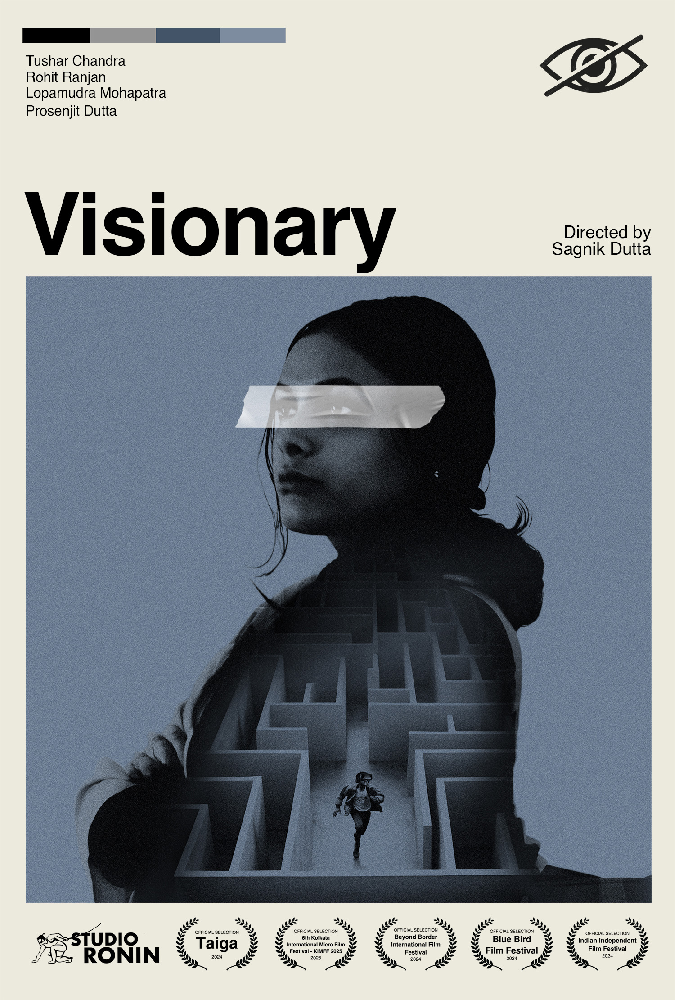
Trailer
Stills
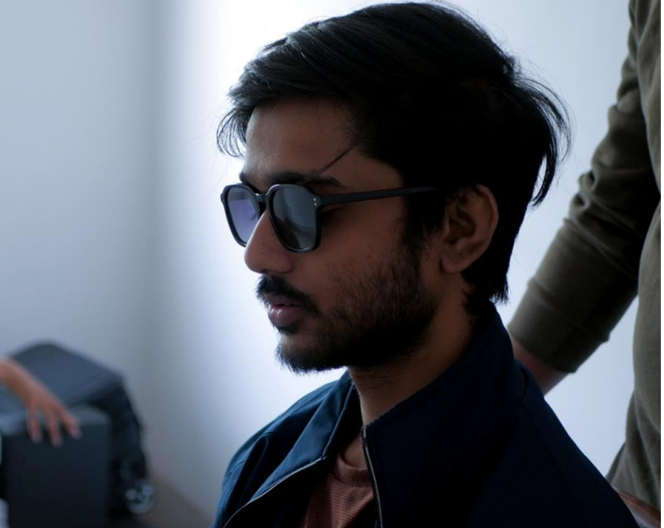
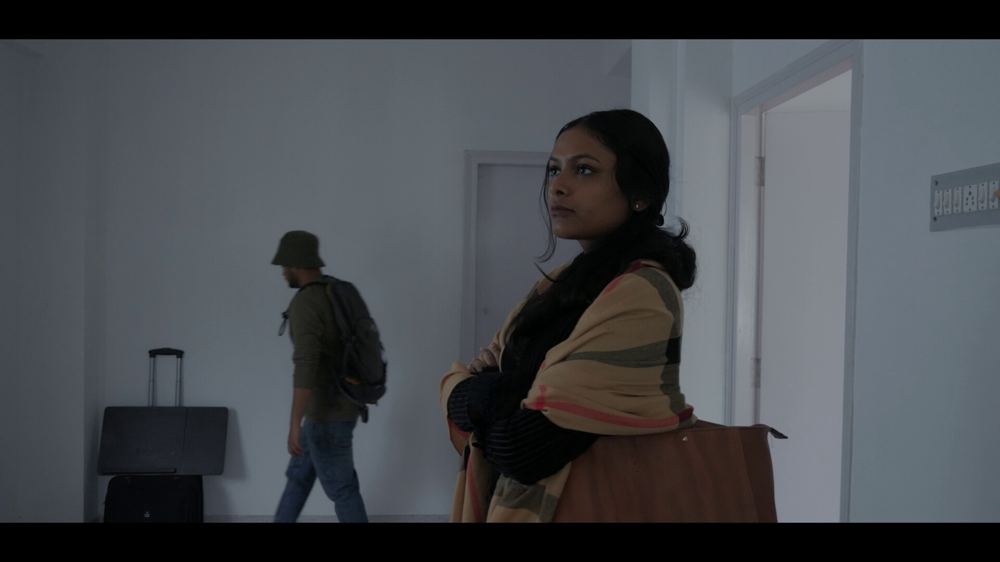
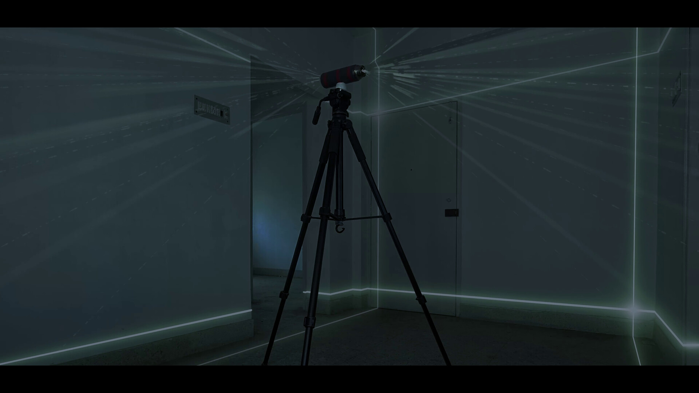
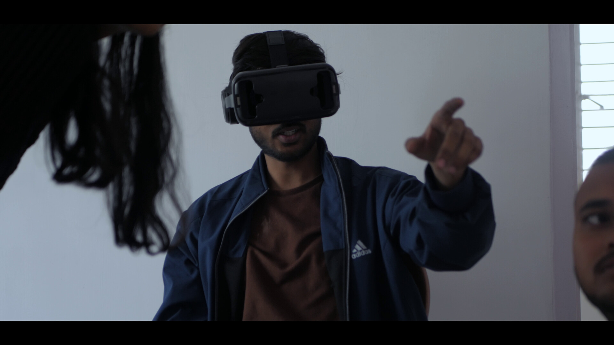
Visionary
27 min, Hindi & English, 2024
Synopsis
A visually disabled young man participates in the trial of a medical device that allows blind people to experience vision. But the trial goes wrong when the device shows him more than the human eye can perceive.
Credits
Cast: Tushar Chandra, Lopamudra Mohapatra, Prosenjit Dutta
Story by: Tushar Chandra
Produced by: Rohit Ranjan, Tushar Chandra
Asst. Director: Rohit Ranjan
Production Asst.: Monica Dutta
Location Courtesy: Sudeshna Banerjee
Written, Shot, Directed & Edited by Sagnik Dutta
- Country: India
- Language: Hindi, English
- Subtitles: English
- Runtime: 27 mins
- Genre: Sci-Fi, Thriller
- Aspect Ratio: 2:1
- Format: 4K MP4
- Sound: Stereo